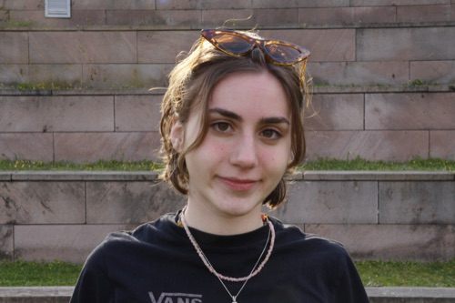
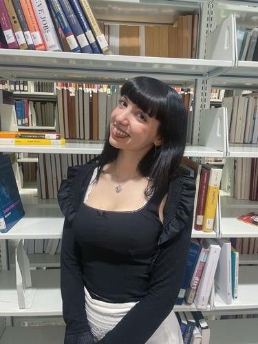
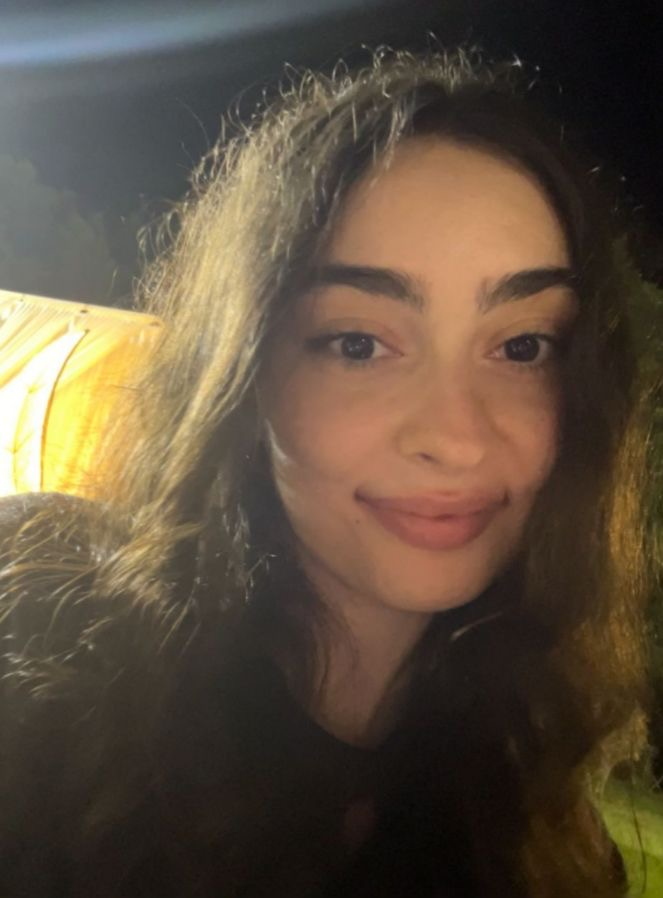
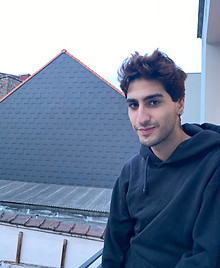
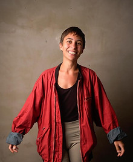
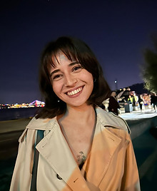
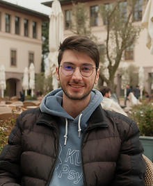
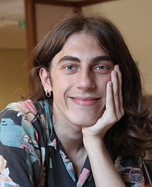
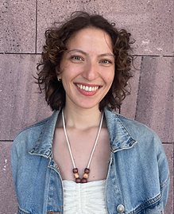
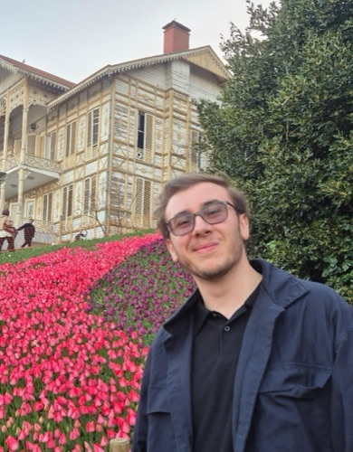

Yunus Doğan
Undergraduate Student
Yunus is a senior undergraduate student in Philosophy, also minoring in Psychology. He is the mastermind behind this website. In addition to all this, his main area of expertise is gastronomy.
yunusdogan19@ku.edu.tr
Zülal Berra Dakın
Undergraduate Student
Zülal is a senior undergraduate in psychology and economics, with a minor major in international relations.
zdakin21@ku.edu.tr
Pelin Savacı
Undergraduate Student
Pelin is a senior undergraduate student in psychology. (Bio to be updated.)
psavaci21@ku.edu.tr
Duygu Hatipoğlu
Undergraduate Student
Duygu is a second-year undergraduate student in psychology.
dhatipoglu22@ku.edu.tr
Cem Karbuz
Undergraduate Student
Cem is a senior undergraduate student in psychology and sociology, also minoring in international relations. They are broadly interested in social cognition, specifically neural underpinnings related to it. Besides academia, they like playing video games and petting cats!
ckarbuz19@ku.edu.tr
İdil Dal
Undergraduate Student
İdil is a senior undergraduate in psychology and media and visual arts with a double major.
idal20@ku.edu.tr
Yaren Sinem Temizkan
Undergraduate Student
Yaren is a junior undergraduate student of Psychology and Sociology. Her main interest areas are gender, social-cognitive development, and perception. In her spare time, she loves writing, video-making and photography.
ytemizkan21@ku.edu.tr
Doruk Aktepe
Undergraduate Student
Doruk graduated from Koç University with a BA in Psychology and Comparative Literature. He is interested in social cognitive mechanisms as well as organisational behavior.
daktepe20@ku.edu.tr
Berkay Bayram
Undergraduate Student
Berkay is a junior undergraduate in Psychology and Sociology with a double major. They are highly interested in cognitive processes revolving around gender detection, recognition, and perception. In their spare time, they like watching shows, chit chatting with friends, having coffee, and writing poetry.
bbayram21@ku.edu.tr
Nihan Cengiz
Undergraduate Student
Nihan is a senior undergraduate in Psychology with a Sociology minor. Her interests are social cognition, gender and clinical psychology. In her spare time, she likes to read, dance and practice photography.
ncengiz21@ku.edu.tr
Çağan Kızğın
Undergraduate Student
Undergraduate student at Koç University interested in neuroscience, cognition, and human behavior.
ckizgin24@ku.edu.trNew Member
To be added
We are actively recruiting — new lab members will appear here soon.
Apply to join →